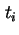
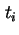
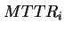
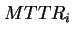

Next: เวลาเฉลี่ยระหว่างการเสียหาย (MTBF)
Up: การประเมินค่าความน่าเชื่อถือเชิงปริมาณ
Previous: เวลาเฉลี่ยก่อนการเสียหาย (MTTF)
Contents
Index
เวลาเฉลี่ยในการซ่อมแซม (MTTR)
ค่าเวลาเฉลี่ยในการซ่อมแซม Mean Time to Repair (MTTR) คือค่าเฉลี่ยของเวลาที่ต้องใช้ในการซ่อมแซมระบบ การประมาณค่า MTTR ทำได้ค่อนข้างยาก เนื่องจากการเสียหายมีลักษณะแตกต่างกัน ดังนั้นการหาค่า MTTR มักจะทำการประมาณค่า โดยการทดลองสร้างกลุ่มของความเสียหายเข้าไปในระบบ จากนั้นทำการวัดเวลาที่ต้องการในการซ่อมแซมอุปกรณ์ ให้  ของความเสียหายของอุปกรณ์
ของความเสียหายของอุปกรณ์  ชุด ต้องการเวลาในการซ่อมแซมเท่ากับ  ค่า สามารถประมาณเวลาเฉลี่ยในการซ่อมแซม โดย
ชุด ต้องการเวลาในการซ่อมแซมเท่ากับ  ค่า สามารถประมาณเวลาเฉลี่ยในการซ่อมแซม โดย
ความถูกต้องของการประมาณค่าเวลาเฉลี่ยในการซ่อมแซม สามารถเพิ่มให้ถูกต้องยิ่งขึ้นได้ โดยเฉลี่ยค่าเวลาที่ใช้ในการซ่อม จากผู้บริการซ่อมแซมหลายคน ตัวอย่างเช่นจากความเสียหายของอุปกรณ์ ชุด มีผู้บริการซ่อมแซม  คน แต่ละคนมีค่าเฉลี่ยในการซ่อมแซมเท่ากับ  ซึ่งเป็นเวลา
คน แต่ละคนมีค่าเฉลี่ยในการซ่อมแซมเท่ากับ  ซึ่งเป็นเวลา  ที่พนักงานคนที่ ใช้ในการซ่อมแซม ค่าเฉลี่ยของ สามารถแสดงได้โดย
ที่พนักงานคนที่ ใช้ในการซ่อมแซม ค่าเฉลี่ยของ สามารถแสดงได้โดย
มักจะถูกระบุอยู่ในรูปของอัตราการซ่อม  ที่เป็นค่าเฉลี่ยของการซ่อมต่อหน่วยเวลา ค่า และ มีความสัมพันธ์ดังต่อไปนี้
ที่เป็นค่าเฉลี่ยของการซ่อมต่อหน่วยเวลา ค่า และ มีความสัมพันธ์ดังต่อไปนี้
Vara Varavithya
2002-03-09